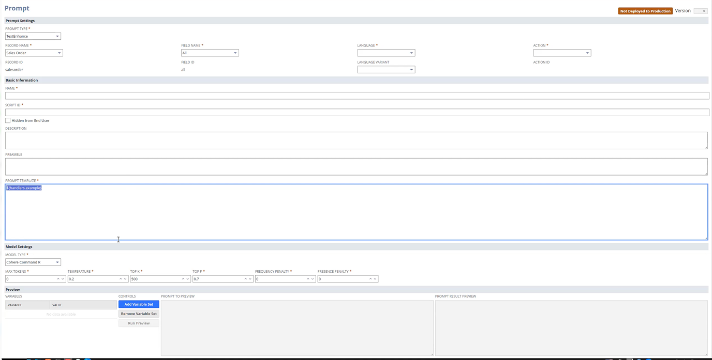

The problem: AI administration nobody had designed before
Prompt Studio lets administrators customize the AI prompts behind NetSuite’s features — tuning how AI writes for their company’s records, fields, and tone. When this project started, generative AI was brand new to enterprise software. There were no conventions to follow: prompt authoring tools barely existed anywhere, let alone patterns for making them usable by admins rather than engineers.
Before: a developer’s form
The original version exposed the system’s internals directly: raw template syntax typed by hand, model parameters like Top K and frequency penalty presented flat on one page, preview buried at the bottom. It worked — for the people who built it. For an administrator trying to make AI write purchase descriptions properly, every step was a guess.

Before: one flat form — raw template syntax typed by hand, model parameters in a row, preview at the bottom. Built by developers, for developers.
Evidence first: watch people fail, study the field
Rather than debating opinions about a tool with no precedent, we gathered evidence two ways: usability testing with our researchers to see exactly where people fell off, and competitor research across the emerging landscape of prompt tools to learn what conventions were starting to form. The sessions were humbling in the useful way — the flat form’s order matched the system’s schema, not the user’s thinking.
After: structured around the task, not the schema
The redesign reordered everything around how an admin actually thinks:
- Select the target first — which record type, which field. Everything downstream depends on it, so it leads.
- Settings in plain language — name, language, action — with model parameters grouped where they belong instead of dominating the page.
- Guided variable insertion — pick a variable type, pick a variable, click add — replacing hand-typed template syntax and its silent failure modes.
- Preview with sample values — test the prompt against realistic data before deploying it to the whole company.
![After the revamp: the New Prompt page restructured around the admin's task — a left rail ordered as Select Target (prompt type, record type, field name), then Basic Prompt Settings in plain language, then Model Settings grouped at the end; the main area holds the template with guided variable insertion (pick a variable type, pick a variable, add to template), a variables-in-template table where sample values can be entered, and a preview pane that shows the prompt and its generated result side by side.](media/PromptStudio/prompt-studio-after.png)
After: the page follows the admin’s task order — select the target, then settings in plain language; variables are inserted from dropdowns instead of typed syntax, and the preview runs the prompt against sample values before anything is deployed.
The structure was deliberately anchored to the user’s task, not to any particular UI kit — the kind of foundation that outlives platform changes, because “what am I trying to do first?” doesn’t change when the technology underneath does.
Outcome
- Shipped as part of NetSuite’s AI platform.
- Task-first structure validated in usability testing.
- Became one of the earliest concrete examples inside the company of AI administration treated as a designed product, not a developer surface.
What I learned
When a technology is too new to have conventions, the user’s task order is the only stable foundation — schemas change, models change, but “what am I trying to do first?” doesn’t. Test early precisely because nobody knows what good looks like yet: in a space with no conventions, a handful of usability sessions makes you the best-informed person in the room.